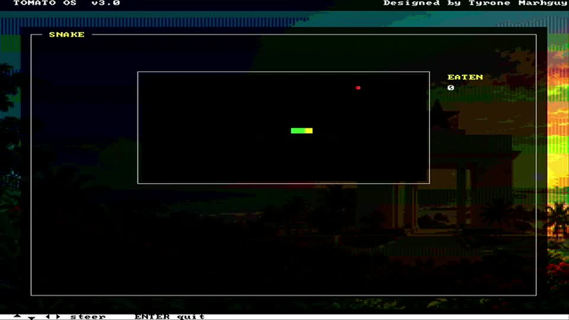
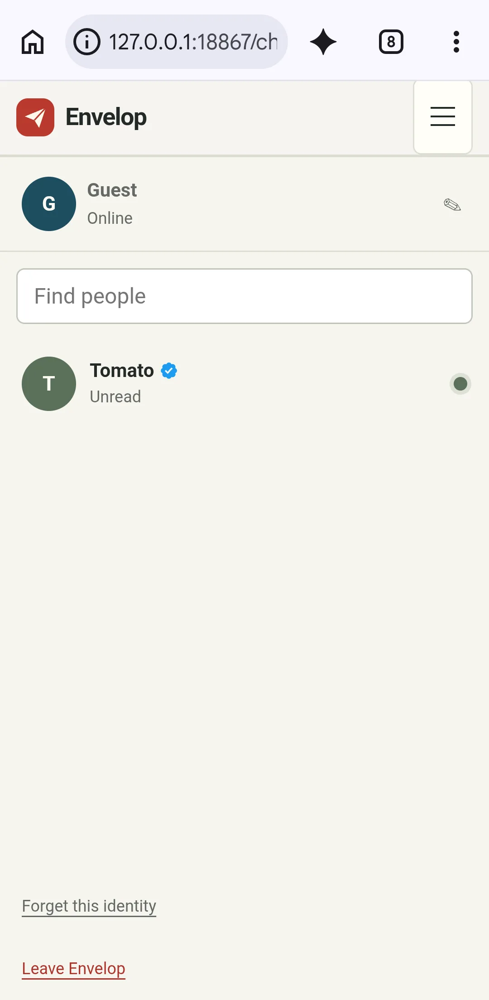
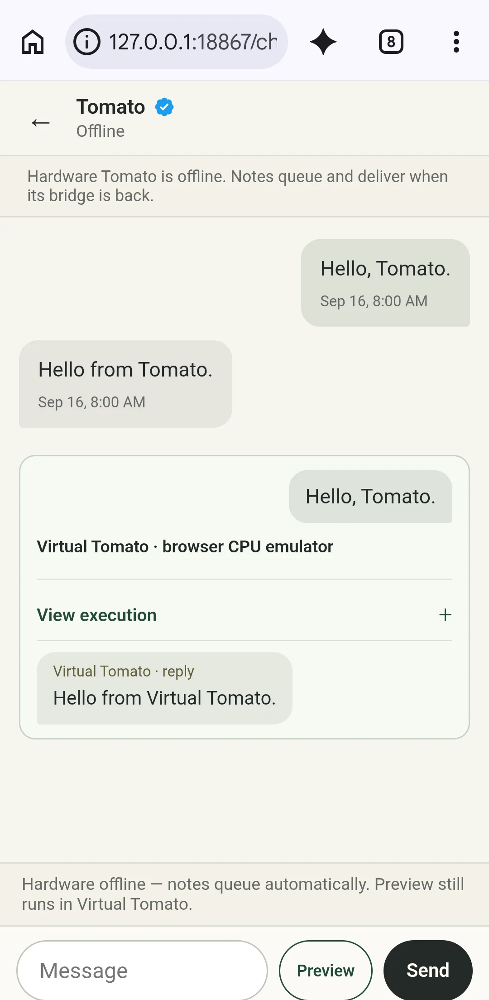

THE MESSENGER WHERE A COMPUTER WRITES BACK
Text people.
Text a computer.
Tomato is a real 32-bit computer with Envelop running inside its operating system. Add it like a contact, send from your browser, and see whether physical or Virtual Tomato answered.

Tomato01 / SEND TO A COMPUTER
From your browser
into Tomato OS.
You send in the Envelop web app. The backend keeps the message queued until a nearby verified bridge can carry it to Envelop inside Tomato OS. Tomato’s CPU receives it and its reply returns with its origin labeled.
The bridge may be the macOS operator app or the private Android bridge. “Verified Tomato” means the bridge received the exact ENVELOP/1 protocol identity; it is not a broader security-attestation claim.
02 / WEB CHAT
The public client is the browser.
No native app download required.
OPEN CHAT
Pick a name. Start a conversation.
Tomato stays pinned as a verified device contact. The mobile two-pane chat includes unread pips, typing feedback, queued messaging, and visibly labeled compute provenance.


Web chat is implemented in this repository. The exact revision at the public endpoint and current hardware availability must be checked separately. Read current status.
03 / PHYSICAL TOMATO
The contact is
a real computer.
Tomato is a custom 32-bit architecture with an FPGA machine and an assembly-written OS. Envelop inside Tomato OS is the device endpoint; a nearby bridge carries queued messages over Tomato’s radio link.
A message is “delivered” only after Tomato returns MESSAGE_ACK and the bridge records it. That is protocol acceptance, not a human read receipt. Current source implements the path, but current programmed hardware and deployed backend revisions still need live acceptance evidence.
Explore physical TomatoTomato verificationPublic Tomato source
04 / VIRTUAL TOMATO · BROWSER EMULATION
Try it now.
Know where it ran.
Virtual Tomato runs in your browser with simulated peripherals. It is an explicit fallback or preview, visibly labeled on every result. It does not send work to hardware and is never queued for later physical execution.
Boot Tomato OS.
Explore the desktop and open Envelop inside the emulated machine.
Play Virtual Tomato → VIRTUAL / CHAT PREVIEWPreview a draft.
Run a draft locally when physical Tomato is unavailable. The reply remains labeled Virtual Tomato.
Open web chat → PROVENANCERead the evidence.
See what simulation, browser emulation, and physical hardware each prove.
Tomato verification →05 / COMPUTE · CONTROLLED LANGUAGE · LABELED RESULT
Envelop interprets.
Tomato executes.
A supported expression becomes a small program. Envelop preserves the request, controlled-language interpretation, canonical program, and bytecode provenance—never a host calculation labeled as hardware.
What is (57 + 19) AND 0x3F?
R0 = 57 + 19 R0 = R0 & 63 RETURN R0Simplified readable view. Unsupported input fails closed.
12 / 0x0000000C · Virtual Tomato
Example virtual result. A completed backend hardware result is labeled Physical Tomato.Hardware first. No unsafe replay.
A timeout or ambiguous claimed job has an unknown hardware outcome, so Envelop does not replay it virtually. Virtual execution is offered only after a terminal non-result and is always labeled.
Inspect what ran.
The chat exposes the understood form, program, bytecode, and result provenance.
06 / KNOW THE BOUNDARIES
Status, platforms, and privacy.
Current facts without product-page shorthand.
01 Current status
Implemented source is not the same as deployed, online, or hardware-accepted behavior. See the current evidence boundary.
02 Supported platforms
The browser is public. macOS 14 is the source-supported operator/test bridge. Android 0.2.0 is private. Windows and iOS native clients are retired. See platform details.
03 Data and deletion
The backend stores the identity, chat, queue, and compute state needed for the service. “Leave Envelop” requests deletion of the current profile and related chat data. Read the privacy summary.